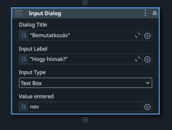
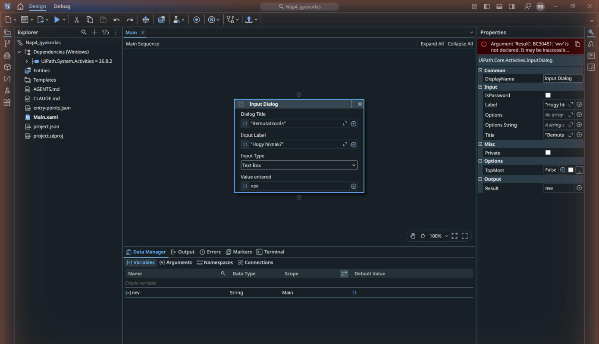
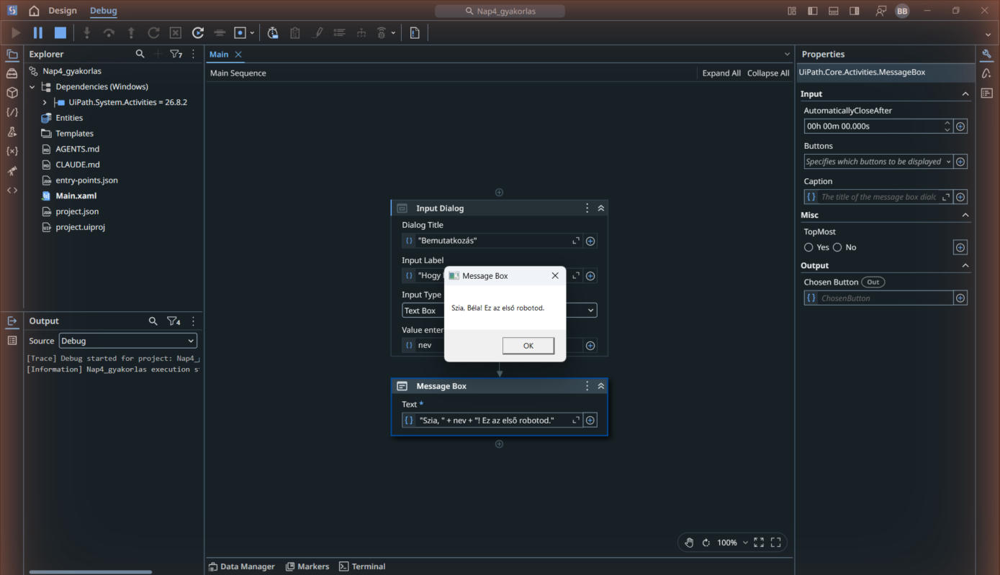
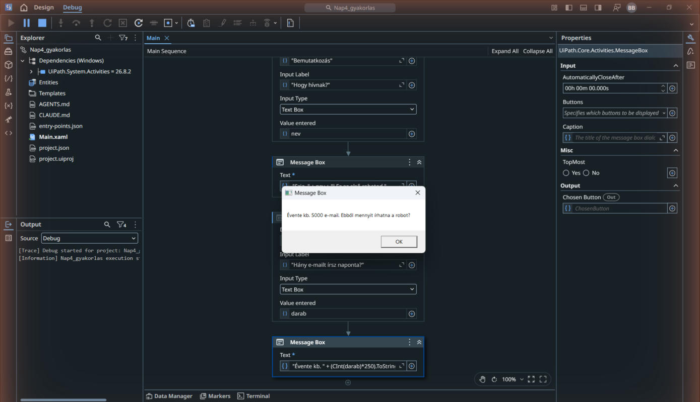
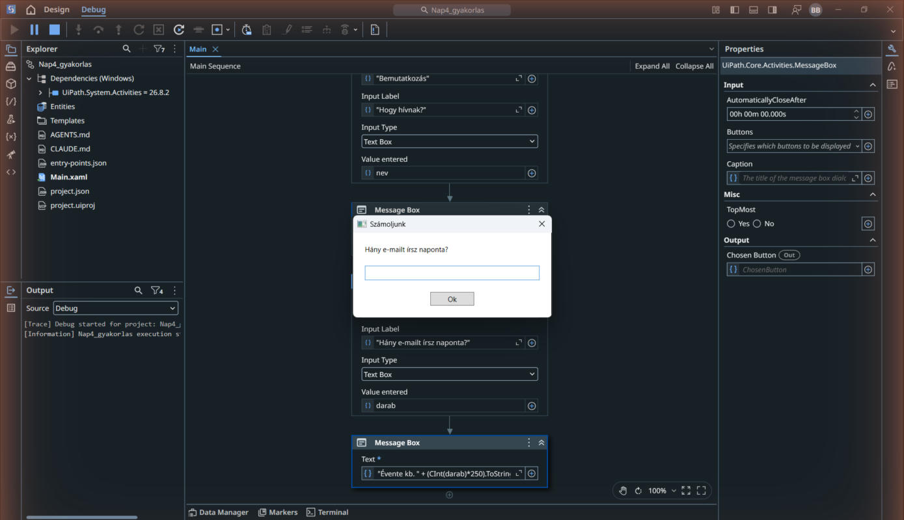

2 / 7 blokk
Kérdez, számol, válaszol: az első robot
Input Dialog, változó, Message Box: lépésről lépésre elkészíted az első robotodat, majd kipróbálod hibás bemenettel is.
A blokk végére
- megépítetted az első interaktív robotodat: kérdez, számol, válaszol;
- használtál változót, és tudod, mire való;
- láttad a robotot elromlani és megjavulni: ez a legfontosabb tanulság.
Robot, aki köszön és számol
- Maradj a Nap04_gyakorlas projektben, és töröld ki az előbbi Message Boxot (jelöld ki, Delete). Add hozzá (Ctrl+Shift+T): Input Dialog. A kártyán a Dialog Title mezőbe:
"Bemutatkozás", az Input Label mezőbe:"Hogy hívnak?".
Az Input Dialog kártya kitöltve: Dialog Title, Input Label; a Value entered mezőbe kerül majd a változó - Kell egy hely, ahova a robot elteszi a választ. A kártya Value entered mezőjébe kattints, nyomj Ctrl+K-t (megjelenik a Set Var felirat), írd be: nev, és Enter. Ezzel változót hoztál létre: egy elnevezett dobozt a robot memóriájában. (A Ctrl+K a leggyorsabb változó-létrehozás; a vászon alatti Variables fülön mindig meg is nézheted őket.)

A Ctrl+K után: a Value entered / Result mezőben a nev változó, és alul a Variables fülön is megjelent (String, Main) - Az Input Dialog alá add hozzá a Message Box aktivitást. Text:
"Szia, " & nev & "! Ez az első robotod.". Visual Basicben az&szövegeket fűz össze. A Variables / Data Manager panelen anevtípusaStringlegyen, hatóköre a teljes Sequence. - Futtasd (Ctrl+F5): a robot megkérdezi a neved, majd köszön.

A robot köszön: a Message Box a beírt névvel - Bővítsd egy második Input Dialog aktivitással. Dialog Title:
"Számoljunk", Input Label:"Hány e-mailt írsz naponta?", Value entered:darab(String változó). A végére Message Box:"Évente kb. " & (CInt(darab)*250).ToString() & " e-mail.". A 250 munkanap a gyakorlat becslési feltételezése, nem mindenkire érvényes éves adat.
A kész számolós robot futás közben: 20 e-mail/nap = évente kb. 5000
Ellenőrzőpont: ezt kell látnod
A robot két kérdés után kiszámolja az éves darabszámot (250 munkanappal), és értelmes szám jelenik meg.
Ha mást látsz: ha kék hullámos hibát látsz a szövegmezőben, az idézőjelek vagy az & jelek körül hiányzik valami; a CInt(darab) azért kell, mert az Input Dialog szövegként adja vissza a számot, és számolni csak számmal lehet.

Törd el, aztán javítsd meg
- Futtasd újra, és a darabszámhoz írd azt: sok. A robot hibával elszáll: olvasd el az Output panelen, mit mond a hiba (Cast/Conversion: nem tudott számot csinálni a szövegből).
- Ez a robotok világának alaptörvénye: a robot pontosan azt csinálja, amit mondtál neki, és amire nem készítetted fel, attól elesik.
- Javítás bemenetellenőrzéssel: hozz létre egy
napiDarabnevűInt32változót. A második Input Dialog után tegyél egy If aktivitást. Condition:Integer.TryParse(darab, napiDarab) AndAlso napiDarab >= 0 AndAlso napiDarab <= 1000000. A Then ág Message Box szövege:"Évente kb. " & (napiDarab*250).ToString() & " e-mail.". Az Else ágban:"0 és 1 000 000 közötti egész számot adj meg.". A korábbi CInt-es Message Boxot töröld. Próbáld ki: 5 → 1250; sok, -1 és üres válasz → érthető jelzés. A TryParse nem dob konverziós hibát; a részletes kivételkezelésre később térünk vissza.
Tipikus hibák ennél a gyakorlatnál
- A változónév és a szöveg összekeveredik: ami idézőjelben van, az szöveg; ami nincs, azt a robot változóként keresi.
- A kimeneti mezőbe változó kell, például
darab, idézőjelek nélkül. A Ctrl+K új változót hoz létre; meglévő változó nevét közvetlenül is beírhatod. - A számoló Message Box a második adatbekérés után fusson. Az ellenőrzött változatban az If megfelelő ágába kerüljön. Ebben a példában nincs ciklus; az aktivitások helye határozza meg a végrehajtás sorrendjét.
Hol használnád még?
- Minden űrlapos adatbekérés így épül fel: kérdés, változó, feldolgozás, válasz.
- A változó ugyanaz a fogalom, mint Excelben a cellahivatkozás: elnevezett hely az adatnak.
- A következő blokkban a robot már nem tőled kér adatot, hanem Excelből olvas.